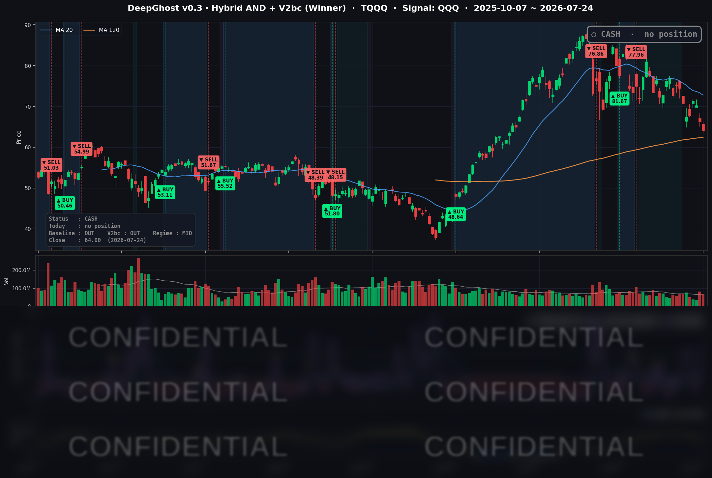

👻 매일 시그널과 히스토리를 홈페이지에서 한눈에 → www.ghostai.co.kr
다우와 S&P는 소폭 올랐지만 나스닥은 반도체 급락으로 인해 다시 한번 큰 폭으로 떨어졌습니다.
📊 오늘의 매매 신호
| 항목 | 내용 |
|---|---|
| 오늘 할 일 | ✅ 아무것도 안 해도 됩니다 |
| 포지션 상태 | 💵 현금 보유 중 (OUT OF POSITION) |
| 현금 보유 기간 | 2026-06-29 ~ 2026-07-24 (19거래일) |
| TQQQ 종가 | $64.00 (-3.47%) |
나스닥100이 이틀 연속 흔들리는 구간에서 현금을 유지한 덕분에 우리는 20% 수준의 손실을 막을 수 있었습니다.
이번 하락은 금리 불안 + AI 투자 불안에 의한 신규 자금 유입 제한입니다.
TQQQ 시그널 — OUT OF POSITION
현재 상태: 현금 보유 중 | 신규 진입·청산 신호 없음

이날 나스닥100(QQQ)은 -1.12% 하락했고, TQQQ는 -3.47% 밀렸습니다. 목요일 빅테크 어닝 실망에서 시작된 성장주 약세가 금요일까지 이어지며 이틀 연속 스트레스가 쌓인 흐름입니다. 전략은 이 구간 내내 현금을 들고 있었기 때문에, 표면 지수가 착시처럼 버티는 동안에도 레버리지 하락을 정면으로 맞지 않았습니다.
오늘 미국 시장 — 시황 요약
지수 마감
| 지수 | 종가 | 등락률 |
|---|---|---|
| S&P 500 | 7,411.98 | +0.05% |
| 나스닥 종합 | 24,975.82 | -0.64% |
| 다우존스 | 51,947.25 | +0.46% |
| 러셀 2000 | 2,930.00 | -0.35% |
겉으로 보이는 지수(S&P·다우)는 안정적이었지만 속은 약했습니다. 나스닥은 -0.64%, QQQ는 -1.12%로 성장·반도체 진영이 눌렸고, 다우와의 격차가 크게 벌어졌습니다. 소형주(러셀 2000)까지 함께 약세여서, 지수가 버틴 것은 애플 같은 소수 대형주가 만든 착시에 가깝습니다. 주간으로는 3대 지수 모두 하락(나스닥 주간 약 -2%)으로 마감했습니다.
국채 금리 동향
| 만기 | 수익률 | 전일 대비 |
|---|---|---|
| 3개월 | 3.805% | +0.5bp |
| 10년 | 4.679% | -2.4bp |
| 30년 | 5.162% | -0.9bp |
장단기 스프레드(10년-3개월)는 +87.4bp로 정상(우상향) 곡선을 유지했습니다. 위험 회피 국면에서 중장기물로 완만한 안전자산 매수가 들어오며 5년·10년 금리가 소폭 내렸고, 단기물(3개월)은 고정됐습니다. 다음 주 FOMC 동결 전망이 단기 금리를 붙잡아 두는 가운데, 성장주 급락이 장기물 매수 수요를 만든 셈입니다. 이날 금리는 주가 하락의 원인이라기보다 결과에 가까웠습니다.
연준 발언 & 금리 패스
연준은 7/18~7/30 블랙아웃(발언 금지) 기간에 들어가 있어 이날 시장을 움직인 신규 연준 발언은 없었습니다. 시장의 초점은 전적으로 7/29 FOMC 결정문과 파월 기자회견으로 옮겨갔습니다. 이번 회의는 점도표·경제전망을 갱신하지 않는 회의로, 컨센서스는 동결(3.50~3.75% 유지)입니다. 6월 물가가 여전히 목표(2%)를 웃도는 3.5%대여서 "데이터를 더 지켜보자"는 스탠스가 이어질 전망입니다.
오늘의 핵심 이슈
- 한국발 메모리·반도체 셀오프 — SK하이닉스·삼성 관련 우려가 미국 메모리 체인으로 번지며 마이크론(MU) -6.99%, 인텔(INTC) -7.89%, 반도체 장비주가 동반 급락했습니다. 6월 말부터 이어진 AI 인프라 밸류에이션 재평가의 연장선입니다.
- 애플 나홀로 급등, S&P 방어 — 애널리스트 목표주가 상향과 포드 차세대 EV의 애플 맵스 탑재 소식이 촉매가 되어 애플이 +3.53% 급등하며 S&P를 홀로 떠받쳤습니다.
- 방어적 로테이션 — 다우와 경기방어 우량주는 오르고 나스닥100·반도체가 빠지는 전형적인 위험 회피 흐름이었습니다.
변동성 & 투자심리
VIX는 18.58로 전일(18.70)보다 소폭 내렸습니다. 20을 밑돌아 아직 패닉 수준은 아니지만, 나스닥 내부 스트레스를 감안하면 다음 주 대형 이벤트를 앞두고 변동성이 저평가돼 있을 가능성이 있습니다. 공포·탐욕 지수는 41로 '공포' 구간에 머물렀습니다. 전반적 심리는 중립~비관으로, 시장 전체가 7/29 FOMC와 빅테크 어닝 결과를 기다리는 관망 모드입니다.
매크로 & 원자재
WTI 유가는 $90.47(-1.87%), 브렌트유는 $98.38(-2.29%)로 되돌림 하락했습니다. 전일 급등에 따른 반작용으로, 지정학 프리미엄보다 수요 우려와 차익실현이 우세했습니다. 금은 $4,055.70(+0.22%)로 안전자산 수요에 소폭 올랐습니다.
주요 종목 동향
| 종목 | 전일 종가 | 당일 종가 | 등락률 | 비고 |
|---|---|---|---|---|
| AAPL | 321.66 | 333.02 | +3.53% | 애널리스트 목표주가 상향, 포드 애플 맵스 탑재. 7/30 어닝 대기 |
| NVDA | 208.76 | 206.84 | -0.92% | 칩 섹터 약세 속 상대적 선방 |
| MSFT | 381.58 | 381.70 | +0.03% | 사실상 보합. 7/29 마감후 어닝 대기 |
| GOOGL | 317.69 | 319.74 | +0.65% | 전일 어닝 실망 급락 후 소폭 반등 |
| META | 606.10 | 595.19 | -1.80% | 대형 기술주 약세 지속. 7/29 마감후 어닝 대기 |
| AMZN | 233.66 | 232.11 | -0.66% | 완만한 약세. 7/30 마감후 어닝 대기 |
| TSLA | 319.69 | 313.03 | -2.08% | 전일 어닝 실망 급락에 이어 추가 하락 |
| NFLX | 68.89 | 70.09 | +1.74% | 스트리밍 강세, 커버리지 내 상대 강자 |
| AVGO | 392.47 | 381.92 | -2.69% | 반도체 셀오프 동조 |
| QCOM | 171.11 | 166.97 | -2.42% | 반도체 셀오프 동조 |
| INTC | 100.23 | 92.32 | -7.89% | 메모리·파운드리 우려 직격, 최대 낙폭 |
| MU | 990.21 | 920.95 | -6.99% | 한국 메모리발 셀오프 핵심 피해주 |
다음 주는 FOMC(7/29)와 빅4 어닝(7/29 마감후 MSFT·META, 7/30 마감후 AAPL·AMZN)이 이틀에 압축된 초고변동성 구간입니다. 나스닥·QQQ·TQQQ의 향방이 이 이틀에 크게 좌우될 전망이라, 현금을 든 전략의 관망은 오히려 방어적인 위치로 볼 수 있습니다.
Ghost.AI — Quantitative AI Investment
Model: DeepGhost v0.3 | Transformer-Based Deep Learning
Coverage: 13 tickers | Updated every trading day after US market close
⚠️ 본 자료는 정보 제공 목적으로만 작성되었으며 투자 권유가 아닙니다. 모든 투자의 책임은 투자자 본인에게 있습니다. 과거 성과가 미래 수익을 보장하지 않습니다.
[유의사항]
- 본 서비스는 불특정 다수를 대상으로 발행되는 단방향 정보 제공 서비스이며, 투자자 개인의 재산 상황·투자 목적·위험 선호도를 반영한 개별 투자 조언이 아닙니다.
- 고스트에이아이 주식회사는 고객과 쌍방향 의사소통(개별 상담, 맞춤형 자문 등)을 제공하지 않습니다.
- 본 콘텐츠는 투자 권유 또는 매매 주문의 청약·청약의 권유에 해당하지 않으며, 최종 투자 판단 및 그에 따른 손익의 책임은 전적으로 투자자 본인에게 있습니다.
고스트에이아이 주식회사